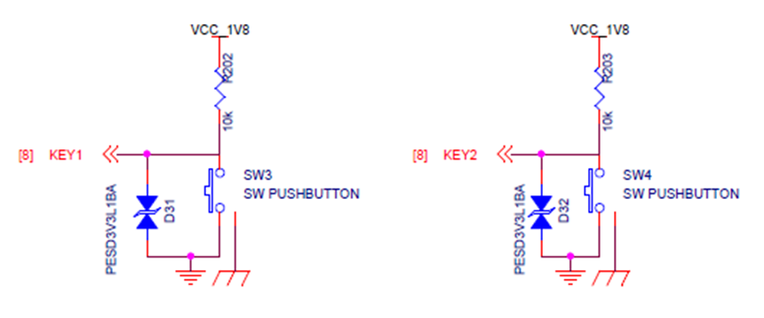
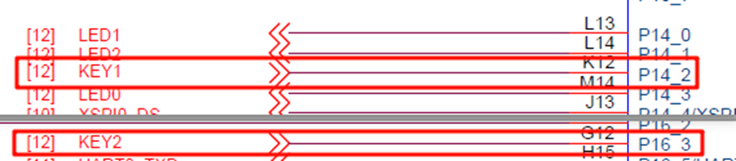
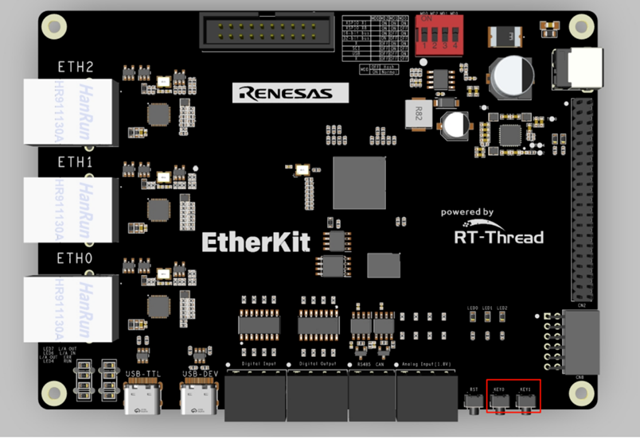
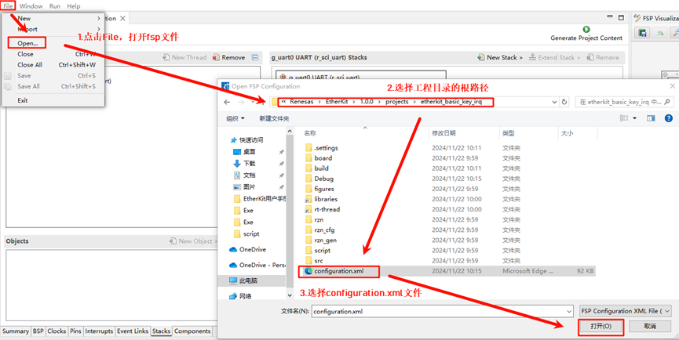
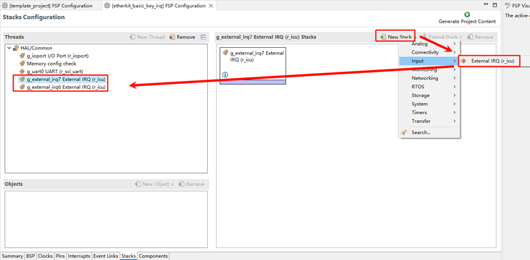
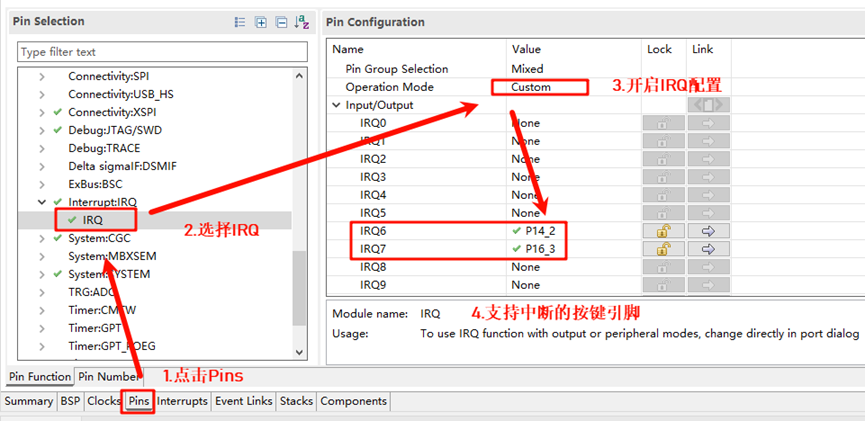
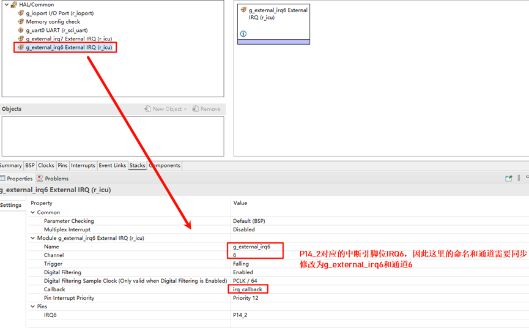
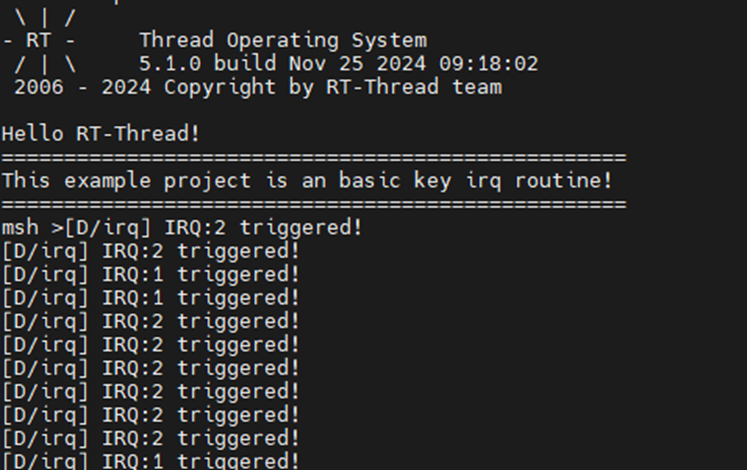

按键中断使用说明
中文 | English
简介
本例程主要功能是通过板载的按键KEY实现外部中断，当指定的KEY被按下时，打印相关信息，同时触发对应的LED亮起。
硬件说明


如上图所示， KEY1(LEFT)、KEY2(RIGHT)引脚分别连接单片机P14_2(LEFT)和P16_3(RIGHT)引脚, KEY按键按下为高电平，松开为低电平。
KEY 在开发板中的位置如下图所示：

FSP配置
首先下载官方FSP代码生成工具：
https://github.com/renesas/rzn-fsp/releases/download/v2.0.0/setup_rznfsp_v2_0_0_rzsc_v2024-01.1.exe
安装成功之后我们双击eclipse下的rasc.exe，并依次根据下图打开工程配置文件configuration.xml：

下面我们新增两个Stack：New Stack->Input->External IRQ(r_icu)：

接着我们需要在引脚配置那开启IRQ功能，根据下图选中我们要使能的两个中断引脚：KEY1(IRQ6)和KEY2(IRQ7)：

回到Stacks界面，这里分别设置IRQ6和IRQ7，配置对应的中断名称、通道号以及中断回调函数：

示例代码说明
本例程的源码位于/projects/etherkit_basic_key_irq。
KEY1(LEFT) 、KEY2(RIGHT)对应的单片机引脚定义如下:
/* 配置 key irq 引脚 */
#define IRQ_TEST_PIN1 BSP_IO_PORT_14_PIN_2
#define IRQ_TEST_PIN2 BSP_IO_PORT_16_PIN_3
LED灯的单片机引脚定义如下:
/* 配置 LED 灯引脚 */
#define LED_PIN_B BSP_IO_PORT_14_PIN_0 /* Onboard BLUE LED pins */
#define LED_PIN_G BSP_IO_PORT_14_PIN_1 /* Onboard GREEN LED pins */
按键中断的源代码位于/projects/etherkit_basic_key_irq/src/hal_entry.c中，当按下对应的中断按键，会触发相应的打印信息。
static void irq_callback_test(void *args)
{
rt_kprintf("\n IRQ:%d triggered \n", args);
}
void hal_entry(void)
{
rt_kprintf("\nHello RT-Thread!\n");
rt_kprintf("==================================================\n");
rt_kprintf("This example project is an basic key irq routine!\n");
rt_kprintf("==================================================\n");
/* init */
rt_err_t err = rt_pin_attach_irq(IRQ_TEST_PIN1, PIN_IRQ_MODE_RISING, irq_callback_test, (void *)1);
if (RT_EOK != err)
{
rt_kprintf("\n attach irq failed. \n");
}
err = rt_pin_attach_irq(IRQ_TEST_PIN2, PIN_IRQ_MODE_RISING, irq_callback_test, (void *)2);
if (RT_EOK != err)
{
rt_kprintf("\n attach irq failed. \n");
}
err = rt_pin_irq_enable(IRQ_TEST_PIN1, PIN_IRQ_ENABLE);
if (RT_EOK != err)
{
rt_kprintf("\n enable irq failed. \n");
}
err = rt_pin_irq_enable(IRQ_TEST_PIN2, PIN_IRQ_ENABLE);
if (RT_EOK != err)
{
rt_kprintf("\n enable irq failed. \n");
}
}
编译&下载
RT-Thread Studio：在RT-Thread Studio 的包管理器中下载EtherKit 资源包，然后创建新工程，执行编译。
IAR：首先双击mklinks.bat，生成rt-thread 与libraries 文件夹链接；再使用Env 生成IAR 工程；最后双击project.eww打开IAR工程，执行编译。
编译完成后，将开发板的Jlink接口与PC 机连接，然后将固件下载至开发板。
运行效果
按下复位按键重启开发板，初始状态下的LED1和LED2处于灭灯状态，当按下KEY1时，LED1(Blue)亮起；当按下KEY2时，LED2(Green)亮起。
